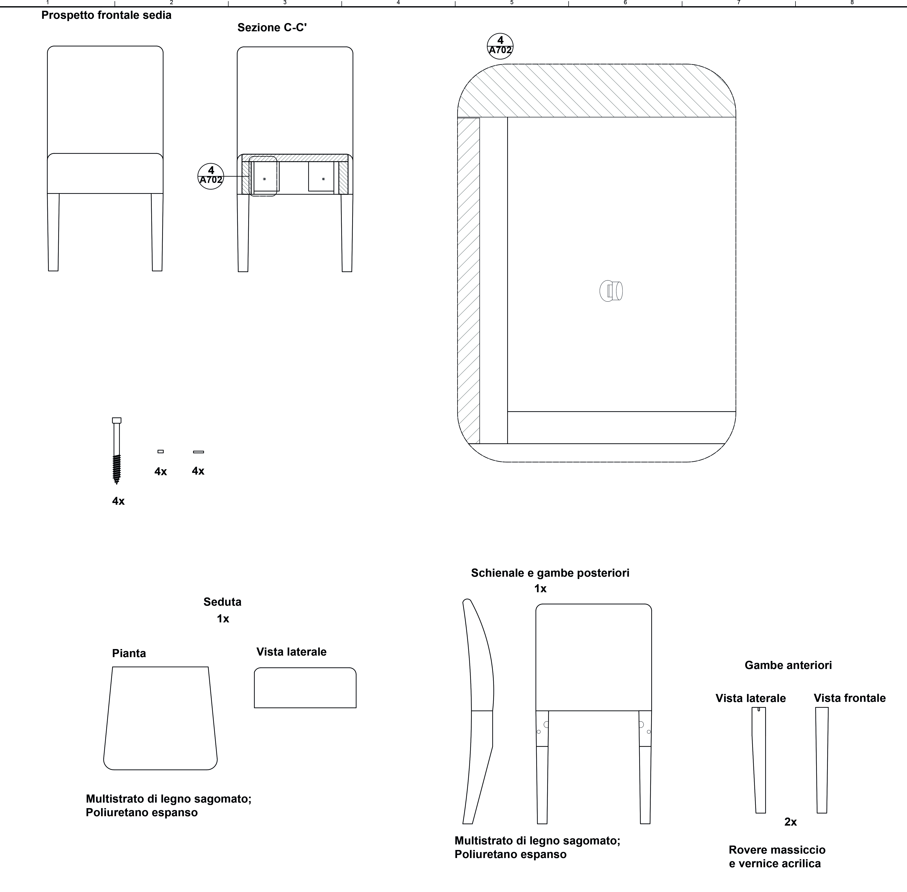
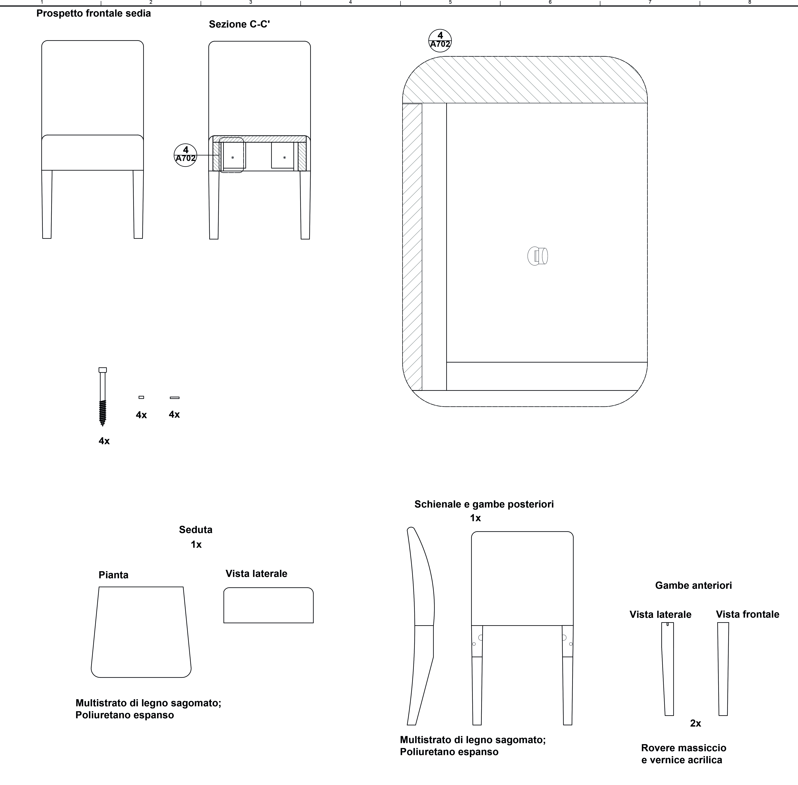
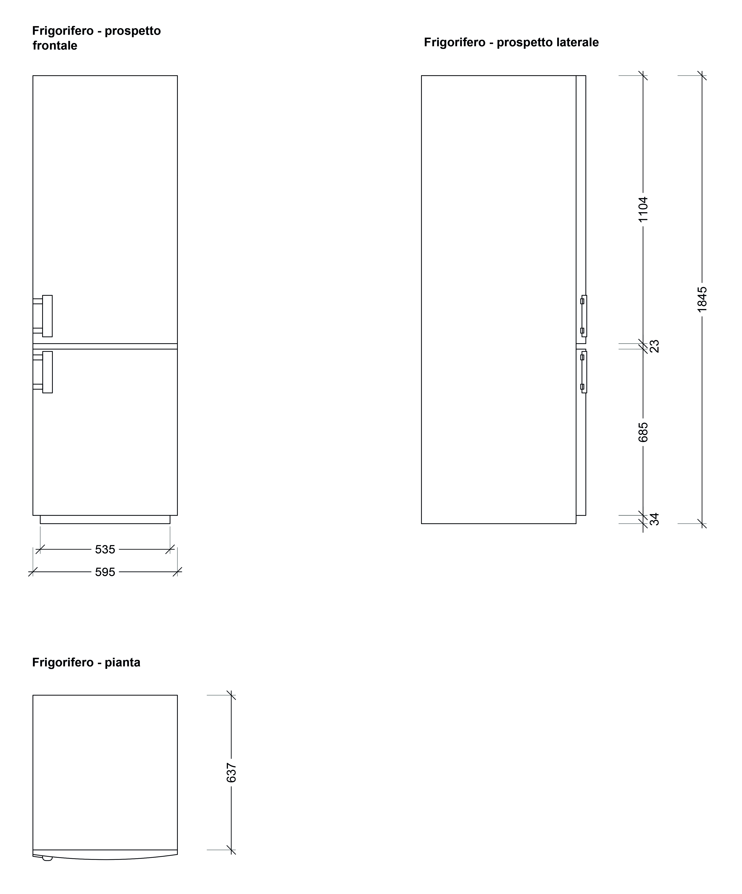
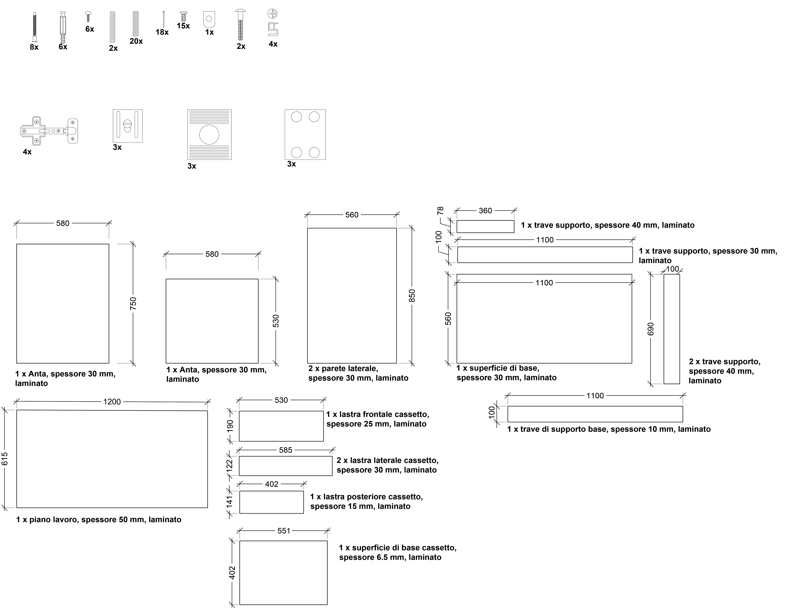
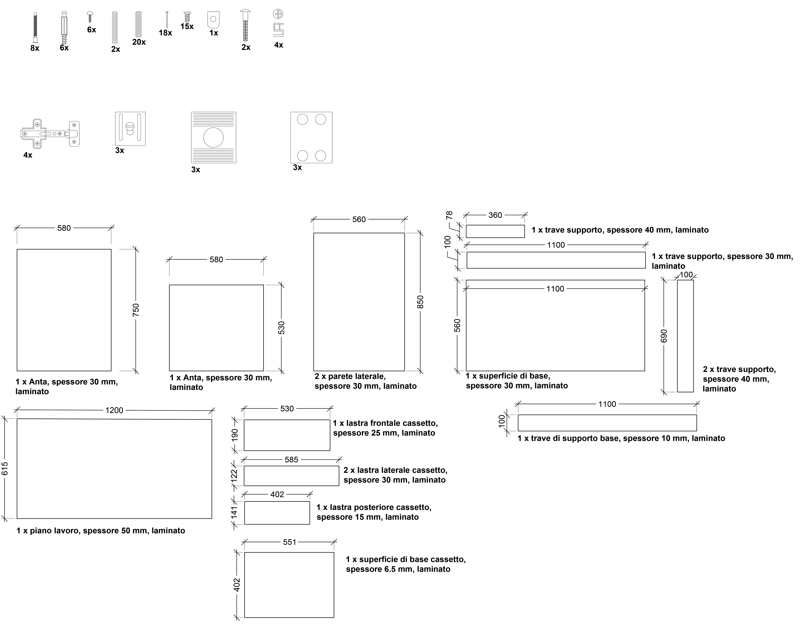
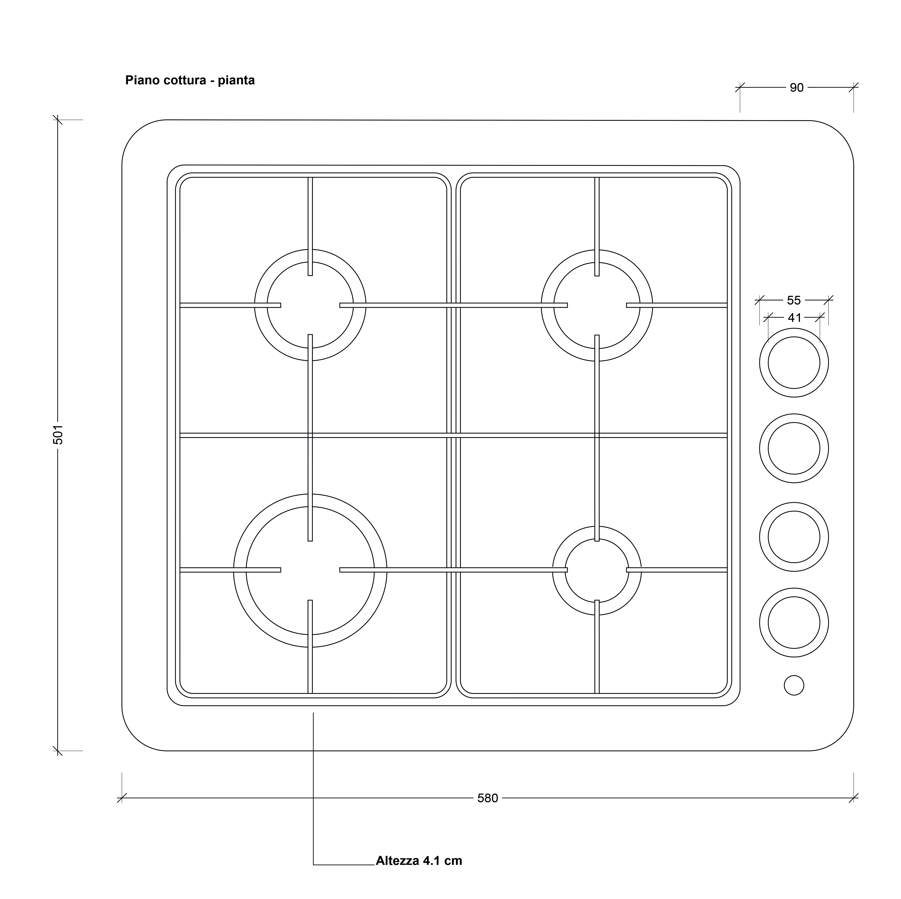
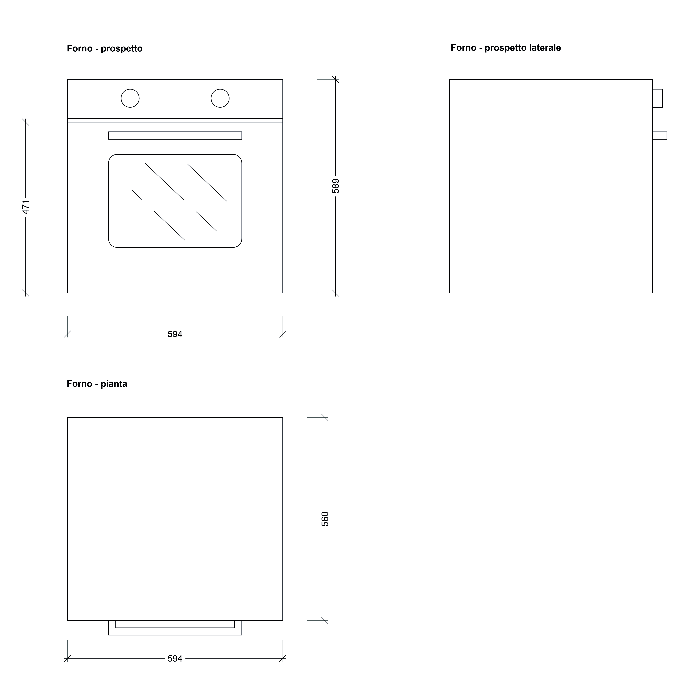

Villa Verde - Progetto cucina
Il progetto della cucina per Villa Verde ha seguito dei parametri di semplicità e funzionalità, fornendo ai proprietari i principali servizi in poco spazio. Per il piano lavoro è stato adottato un mobile in legno, leggero e dotato di cassetti e ante. Per il lavabo ne è stato scelto uno singolo, con adiacente piano in metallo. Il avolo è in legno, così come le sedie imbottite e rivestite in poliestere. Il forno e il fornello costituiscono un unico elemento d'arredo separato dal mobile con ante principale, in modo da consentire un utilizzo più puntuale, con cappa sovrastante. Il pavimento è rivestito in piastrelle 60x60 cm di gres fine porcellanato colore old white. Si trovano piastrelle anche su parte del muro che riveste il piano di lavoro, grandi 10x10 cm, in gres bianco e blu. Il battiscopa è, invece, in PVC con un aspetto che simula il metallo.
LAVELLO FYNDIG no.591.580.03
-Lavello da incasso a una vasca in accaio inossidabile;
-Materiale fonoassorbente sotto il lavello;
Larghezza: 45 cm
Profondità: 39 cm
Download


SEDIA HENRIKSDAL no.391.843.00
-Gambe della sedia: legno di rovere massiccio, vernice acrilica;
-Fodera della seduta: poliestere;
-Struttura del sedile e dello schienale: Multistrato di impiallacciatura di legno sagomato, Poliuretano espanso;
Larghezza: 51 cm
Profondità: 58 cm
Altezza: 97 cm
Larghezza sedile: 51 cm
Profondità sedile: 42 cm
Altezza sedile: 47 cm
Download
 


TAVOLO JOKKMOKK no.502.111.04
-Struttura: legno di pino massiccio, vernice acrilica trasparente;
Lunghezza: 118 cm
Larghezza: 74 cm
Altezza: 74 cm
Download


FRIGORIFERO KYLSLAGEN no.203.127.60
-Superficie: acciaio inossidabile;
Larghezza: 59.5 cm
Profondità: 67.7 cm
Altezza: 184.5 cm
Download


MOBILE BASE CON ANTE E CASSETTO KNOXHULT no.803.268.01
-Struttura principale: Laminato, Plastica ABS, Plastica propilenica;
-Cassetti: Laminato;
-Pannello di fondo: Fibra di legno, Lacca acrilica;
-Piano di lavoro: Laminato ad alta pressione, Plastica;
Larghezza: 120 cm
Profondità: 61.0 cm
Altezza: 90.0 cm
Download


 


MISCELATORE LAGAN no.100.850.27
-Superficie in ottone cromato;
-Cartuccia con dischi in ceramica;
Larghezza: 26 cm
Lunghezza: 30 cm
Altezza: 5 cm
Download


PIANO COTTURA LAGAN HGA4K no.501.560.08
-Piano cottura a gas, bianco;
Larghezza: 58 cm
Profondità: 50 cm
Altezza: 4.1 cm
Download


FORNO LAGAN OV3 no.201.521.96
-Forno elettrico, bianco;
Larghezza: 59.4 cm
Profondità: 56 cm
Altezza: 58.9 cm
Download
